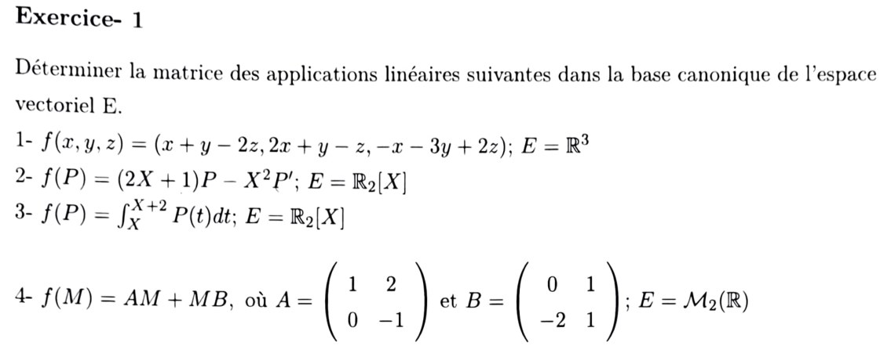
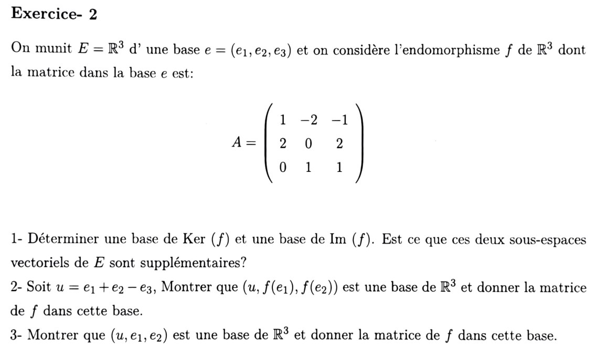
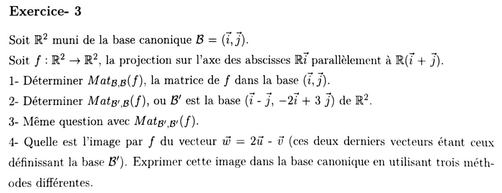
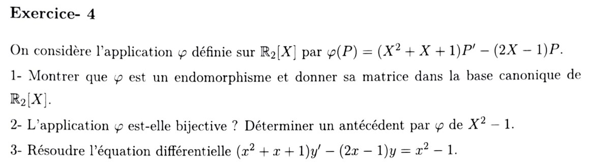
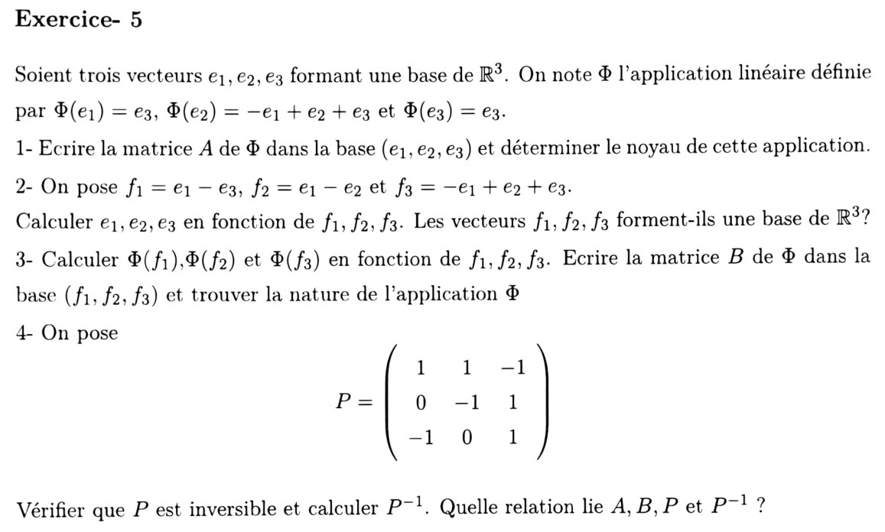
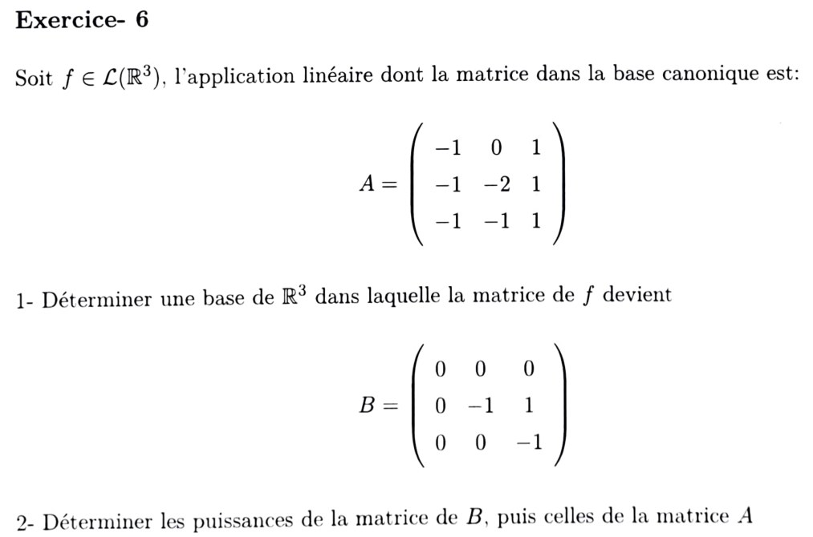
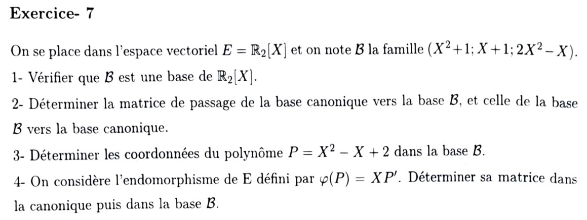
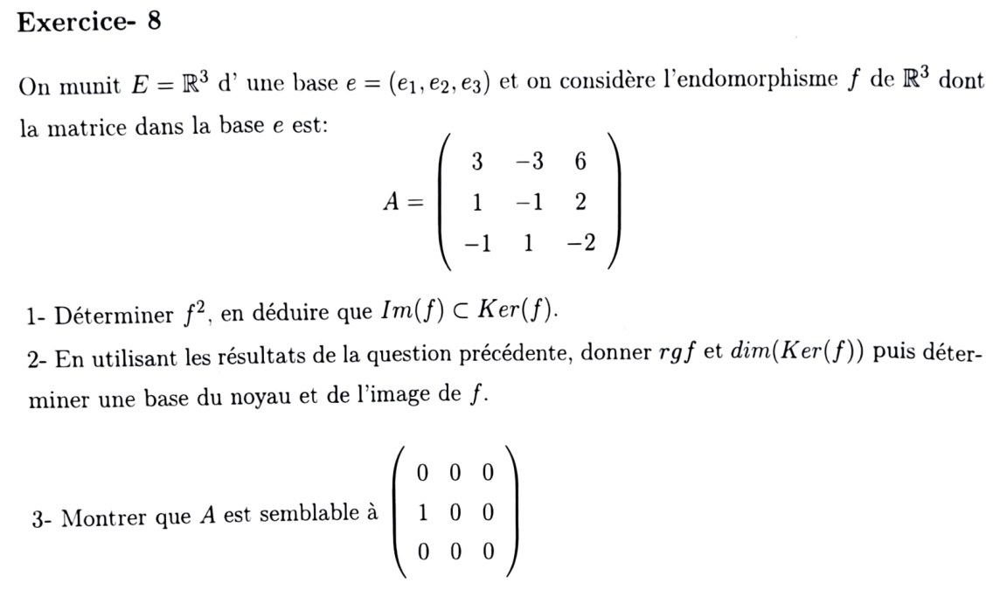
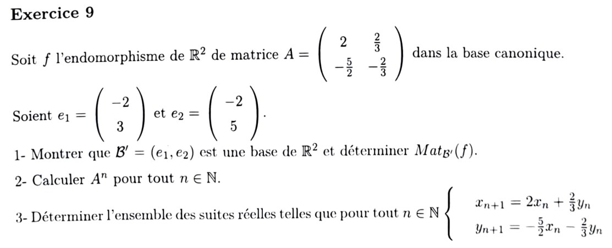

Matrices et applications linéaires
Chapitre 3 de L. Graissot (ECAM AM2, 2026-2027) : rang, matrice d'une application linéaire, changement de base, matrices semblables. Cette page contient pour l'instant le TD3 corrigé (exercices 1 → 9, pages 1 à 3 du sujet) précédé des rappels de méthode indispensables ; le cours détaillé complet et l'exercice 10 suivront.
1. Rappels de méthode utilisés dans le TD
2. Correction TD3 — Matrices et applications linéaires (exercices 1 → 9)

1) \(f(x,y,z)=(x+y-2z,\ 2x+y-z,\ -x-3y+2z)\), \(E=\mathbb R^3\)
Base canonique \((e_1,e_2,e_3)\) :
\[ f(1,0,0)=(1,2,-1),\quad f(0,1,0)=(1,1,-3),\quad f(0,0,1)=(-2,-1,2). \]2) \(f(P)=(2X+1)P-X^2P'\), \(E=\mathbb R_2[X]\)
Base canonique \((1,X,X^2)\). On calcule, avec \(1'=0\), \(X'=1\), \((X^2)'=2X\) :
\[ \begin{aligned} f(1)&=(2X+1)\cdot1-0=1+2X &&\to(1,2,0),\\ f(X)&=(2X+1)X-X^2\cdot1=X+X^2 &&\to(0,1,1),\\ f(X^2)&=(2X+1)X^2-X^2\cdot2X=X^2 &&\to(0,0,1). \end{aligned} \]On vérifie que \(f\) est bien à valeurs dans \(\mathbb R_2[X]\) : le terme en \(X^3\) de \(f(X^2)\) s'annule (\(2X^3-2X^3=0\)).
3) \(f(P)=\displaystyle\int_X^{X+2}P(t)\,dt\), \(E=\mathbb R_2[X]\)
Pour \(P=X^k\) : \(\displaystyle\int_X^{X+2}t^k\,dt=\dfrac{(X+2)^{k+1}-X^{k+1}}{k+1}\).
\[ \begin{aligned} f(1)&=(X+2)-X=2 &&\to(2,0,0),\\ f(X)&=\frac{(X+2)^2-X^2}{2}=\frac{4X+4}{2}=2X+2 &&\to(2,2,0),\\ f(X^2)&=\frac{(X+2)^3-X^3}{3}=\frac{6X^2+12X+8}{3}=2X^2+4X+\frac83 &&\to\left(\tfrac83,4,2\right). \end{aligned} \]Matrice triangulaire supérieure : \(f\) conserve le degré (intégrer sur une longueur 2 ne change pas le degré).
4) \(f(M)=AM+MB\), \(A=\begin{pmatrix}1&2\\0&-1\end{pmatrix}\), \(B=\begin{pmatrix}0&1\\-2&1\end{pmatrix}\), \(E=\mathcal M_2(\mathbb R)\)
Base canonique \((E_{11},E_{12},E_{21},E_{22})\) de \(\mathcal M_2(\mathbb R)\) ; on repère une matrice \(\begin{pmatrix}a&b\\c&d\end{pmatrix}\) par ses coordonnées \((a,b,c,d)\).
\[ \begin{aligned} f(E_{11})&=AE_{11}+E_{11}B=\begin{pmatrix}1&0\\0&0\end{pmatrix}+\begin{pmatrix}0&1\\0&0\end{pmatrix}=\begin{pmatrix}1&1\\0&0\end{pmatrix}\to(1,1,0,0),\\ f(E_{12})&=\begin{pmatrix}0&1\\0&0\end{pmatrix}+\begin{pmatrix}-2&1\\0&0\end{pmatrix}=\begin{pmatrix}-2&2\\0&0\end{pmatrix}\to(-2,2,0,0). \end{aligned} \]Détail de \(E_{21}\) : \(AE_{21}=\begin{pmatrix}1&2\\0&-1\end{pmatrix}\begin{pmatrix}0&0\\1&0\end{pmatrix}=\begin{pmatrix}2&0\\-1&0\end{pmatrix}\) et \(E_{21}B=\begin{pmatrix}0&0\\1&0\end{pmatrix}\begin{pmatrix}0&1\\-2&1\end{pmatrix}=\begin{pmatrix}0&0\\0&1\end{pmatrix}\), donc
\[ f(E_{21})=\begin{pmatrix}2&0\\-1&1\end{pmatrix}\to(2,0,-1,1). \]Détail de \(E_{22}\) : \(AE_{22}=\begin{pmatrix}0&2\\0&-1\end{pmatrix}\) et \(E_{22}B=\begin{pmatrix}0&0\\-2&1\end{pmatrix}\), donc
\[ f(E_{22})=\begin{pmatrix}0&2\\-2&0\end{pmatrix}\to(0,2,-2,0). \]
\(A=\begin{pmatrix}1&-2&-1\\2&0&2\\0&1&1\end{pmatrix}\), matrice de \(f\) dans la base \(e=(e_1,e_2,e_3)\).
1) Base de \(\operatorname{Ker}f\), base de \(\operatorname{Im}f\), supplémentaires ?
Noyau. \((x,y,z)\in\operatorname{Ker}f\iff A\begin{pmatrix}x\\y\\z\end{pmatrix}=0\) :
\[ \begin{cases}x-2y-z=0\\2x+2z=0\\y+z=0\end{cases} \iff\begin{cases}z=-x\\ y=-z=x\\ x-2x+x=0\ \checkmark\end{cases} \]Donc \(\operatorname{Ker}f=\{(x,x,-x)\}=\operatorname{Vect}(u)\) avec \(u=(1,1,-1)=e_1+e_2-e_3\) (c'est le vecteur \(u\) de la question 2).
Image. \(\operatorname{Im}f=\operatorname{Vect}(f(e_1),f(e_2),f(e_3))\), colonnes de \(A\) : \(f(e_1)=(1,2,0)\), \(f(e_2)=(-2,0,1)\), \(f(e_3)=(-1,2,1)\). On remarque \(f(e_1)+f(e_2)=(-1,2,1)=f(e_3)\), donc \(f(e_3)\) est superflu. Les deux vecteurs \(f(e_1),f(e_2)\) ne sont pas colinéaires (\(0\) en 3ᵉ coordonnée pour le premier, \(1\) pour le second ; \(2\neq0\) en 2ᵉ pour le premier, \(0\) pour le second), donc ils forment une famille libre. Théorème du rang : \(\operatorname{rg}f=3-\dim\operatorname{Ker}f=3-1=2\) ✓.
Supplémentaires ? Il faut \(\operatorname{Ker}f\cap\operatorname{Im}f=\{0\}\) et \(\dim\operatorname{Ker}f+\dim\operatorname{Im}f=3\) (la 2ᵉ condition est vraie : \(1+2=3\)). Vérifions \(u\notin\operatorname{Im}f\) : si \(u=a f(e_1)+b f(e_2)\), alors 3ᵉ coordonnée : \(b=-1\) ; 2ᵉ : \(2a=1\), \(a=\tfrac12\) ; 1ʳᵉ : \(a-2b=\tfrac12+2=\tfrac52\neq1\) → contradiction. Donc \(u\notin\operatorname{Im}f\) ; comme \(\operatorname{Ker}f\) est la droite \(\operatorname{Vect}(u)\), l'intersection est \(\{0\}\).
2) \((u,f(e_1),f(e_2))\) est une base ; matrice de \(f\) dans cette base
Coordonnées dans \(e\) : \(u=(1,1,-1)\), \(f(e_1)=(1,2,0)\), \(f(e_2)=(-2,0,1)\). Matrice \(P=\begin{pmatrix}1&1&-2\\1&2&0\\-1&0&1\end{pmatrix}\). Son déterminant (développement selon la 3ᵉ ligne) :
\[ \det P=(-1)\begin{vmatrix}1&-2\\2&0\end{vmatrix}+1\cdot\begin{vmatrix}1&1\\1&2\end{vmatrix} =(-1)(0+4)+(2-1)=-4+1=-3\neq0. \](Cohérent avec la question 1 : \(u\) engendre le noyau, \(f(e_1),f(e_2)\) l'image, ces deux sous-espaces étant supplémentaires.) Donc \(\mathcal B_2=(u,f(e_1),f(e_2))\) est une base de \(\mathbb R^3\).
Images des vecteurs de \(\mathcal B_2\) :
- \(f(u)=0\) (car \(u\in\operatorname{Ker}f\)) → colonne \((0,0,0)\).
- \(f(f(e_1))=A\begin{pmatrix}1\\2\\0\end{pmatrix}=\begin{pmatrix}1-4\\2\\2\end{pmatrix}=\begin{pmatrix}-3\\2\\2\end{pmatrix}\). Or \(f(e_1)+2f(e_2)=(1,2,0)+(-4,0,2)=(-3,2,2)\). Donc \(f(f(e_1))=1\cdot f(e_1)+2\cdot f(e_2)\) → colonne \((0,1,2)\).
- \(f(f(e_2))=A\begin{pmatrix}-2\\0\\1\end{pmatrix}=\begin{pmatrix}-2-1\\-4+2\\1\end{pmatrix}=\begin{pmatrix}-3\\-2\\1\end{pmatrix}\). Or \(-f(e_1)+f(e_2)=(-1,-2,0)+(-2,0,1)=(-3,-2,1)\). Donc \(f(f(e_2))=-f(e_1)+f(e_2)\) → colonne \((0,-1,1)\).
3) \((u,e_1,e_2)\) est une base ; matrice de \(f\) dans cette base
Matrice des coordonnées : \(\begin{pmatrix}1&1&0\\1&0&1\\-1&0&0\end{pmatrix}\) (colonnes \(u,e_1,e_2\)). Développement selon la 3ᵉ ligne : \(\det=(-1)\begin{vmatrix}1&0\\0&1\end{vmatrix}=-1\neq0\) → base. Directement : \(e_3=e_1+e_2-u\), donc \(e_3\in\operatorname{Vect}(u,e_1,e_2)\) et la famille engendre \(\mathbb R^3\).
- \(f(u)=0\) → \((0,0,0)\).
- \(f(e_1)=(1,2,0)=e_1+2e_2\) → \((0,1,2)\).
- \(f(e_2)=(-2,0,1)=-2e_1+e_3=-2e_1+(e_1+e_2-u)=-u-e_1+e_2\) → \((-1,-1,1)\).

1) \(\operatorname{Mat}_{\mathcal B,\mathcal B}(f)\)
\(f\) est la projection sur \(\mathbb R\vec\imath\) parallèlement à \(\mathbb R(\vec\imath+\vec\jmath)\) : \(f(\vec\imath)=\vec\imath\) (vecteur de l'axe, fixé) et \(f(\vec\imath+\vec\jmath)=\vec0\) (vecteur de la direction). Donc
\[ f(\vec\jmath)=f\big((\vec\imath+\vec\jmath)-\vec\imath\big)=\vec0-\vec\imath=-\vec\imath. \]Vérification : \(f(1,1)=(0,0)\) ✓, \(f(x,0)=(x,0)\) ✓.
2) \(\operatorname{Mat}_{\mathcal B',\mathcal B}(f)\), \(\mathcal B'=(\vec\imath-\vec\jmath,\,-2\vec\imath+3\vec\jmath)\)
On note \(b_1'=\vec\imath-\vec\jmath=(1,-1)\), \(b_2'=-2\vec\imath+3\vec\jmath=(-2,3)\). (\(\mathcal B'\) est une base : \(\det\begin{pmatrix}1&-2\\-1&3\end{pmatrix}=3-2=1\neq0\).)
\[ f(b_1')=f(1,-1)=(1-(-1),0)=(2,0)=2\vec\imath,\qquad f(b_2')=f(-2,3)=(-2-3,0)=(-5,0)=-5\vec\imath. \]On exprime dans la base d'arrivée \(\mathcal B\) (canonique) :
Contrôle du produit : \(\begin{pmatrix}1&-1\\0&0\end{pmatrix}\begin{pmatrix}1&-2\\-1&3\end{pmatrix}=\begin{pmatrix}2&-5\\0&0\end{pmatrix}\) ✓.
3) \(\operatorname{Mat}_{\mathcal B'}(f)=\operatorname{Mat}_{\mathcal B',\mathcal B'}(f)\)
Il faut maintenant exprimer \(f(b_1')=2\vec\imath\) et \(f(b_2')=-5\vec\imath\) dans la base \(\mathcal B'\). On inverse : \(P^{-1}=\dfrac1{\det P}\begin{pmatrix}3&2\\1&1\end{pmatrix}=\begin{pmatrix}3&2\\1&1\end{pmatrix}\) (formule \(\frac1{ad-bc}\begin{pmatrix}d&-b\\-c&a\end{pmatrix}\)). Les colonnes de \(P^{-1}\) donnent \(\vec\imath=3b_1'+b_2'\) et \(\vec\jmath=2b_1'+b_2'\). Vérification : \(3(1,-1)+(-2,3)=(1,0)\) ✓ et \(2(1,-1)+(-2,3)=(0,1)\) ✓. Donc
\[ f(b_1')=2\vec\imath=6b_1'+2b_2',\qquad f(b_2')=-5\vec\imath=-15b_1'-5b_2'. \]Contrôle : \(P^{-1}\begin{pmatrix}2&-5\\0&0\end{pmatrix}=\begin{pmatrix}3\cdot2&3\cdot(-5)\\1\cdot2&1\cdot(-5)\end{pmatrix}=\begin{pmatrix}6&-15\\2&-5\end{pmatrix}\) ✓. Autre contrôle : \(\operatorname{tr}=6-5=1=\operatorname{tr}\begin{pmatrix}1&-1\\0&0\end{pmatrix}\) et \(\det=-30+30=0\) (la trace et le déterminant ne changent pas par changement de base) ✓.
4) Image de \(\vec w=2\vec u-\vec v\) (avec \(\vec u=b_1'\), \(\vec v=b_2'\)) — trois méthodes
Coordonnées de \(\vec w\) dans \(\mathcal B'\) : \((2,-1)\). Dans la base canonique : \(\vec w=2(1,-1)-(-2,3)=(4,-5)\).
Méthode 1 — par la matrice canonique. \(f(\vec w)=\begin{pmatrix}1&-1\\0&0\end{pmatrix}\begin{pmatrix}4\\-5\end{pmatrix}=\begin{pmatrix}4+5\\0\end{pmatrix}=\begin{pmatrix}9\\0\end{pmatrix}\).
Méthode 2 — par \(\operatorname{Mat}_{\mathcal B',\mathcal B}(f)\) (départ \(\mathcal B'\), arrivée canonique : on lui donne directement les coordonnées dans \(\mathcal B'\) et on obtient le résultat dans la base canonique) : \(\begin{pmatrix}2&-5\\0&0\end{pmatrix}\begin{pmatrix}2\\-1\end{pmatrix}=\begin{pmatrix}4+5\\0\end{pmatrix}=\begin{pmatrix}9\\0\end{pmatrix}\).
Méthode 3 — par \(\operatorname{Mat}_{\mathcal B'}(f)\) (résultat dans \(\mathcal B'\), puis conversion) : \(\begin{pmatrix}6&-15\\2&-5\end{pmatrix}\begin{pmatrix}2\\-1\end{pmatrix}=\begin{pmatrix}12+15\\4+5\end{pmatrix}=\begin{pmatrix}27\\9\end{pmatrix}_{\mathcal B'}\), soit \(f(\vec w)=27b_1'+9b_2'=27(1,-1)+9(-2,3)=(27-18,\,-27+27)=(9,0)\).
Méthode 4 (contrôle) — par linéarité. \(f(\vec w)=2f(\vec u)-f(\vec v)=2(2,0)-(-5,0)=(9,0)\).

1) \(\varphi\) est un endomorphisme ; matrice dans la base canonique
Linéarité. Pour \(P,Q\in\mathbb R_2[X]\) et \(\lambda\in\mathbb R\) : la dérivation est linéaire, donc \(\varphi(\lambda P+Q)=(X^2+X+1)(\lambda P'+Q')-(2X-1)(\lambda P+Q)=\lambda\varphi(P)+\varphi(Q)\).
À valeurs dans \(\mathbb R_2[X]\). Pour \(P=aX^2+bX+c\) : \(P'=2aX+b\) et
\[ \varphi(P)=(X^2+X+1)(2aX+b)-(2X-1)(aX^2+bX+c). \]Le terme en \(X^3\) vaut \(2a-2a=0\) : \(\deg\varphi(P)\le2\). Donc \(\varphi\in\mathcal L(\mathbb R_2[X])\) : endomorphisme. Matrice dans \((1,X,X^2)\) :
\[ \begin{aligned} \varphi(1)&=-(2X-1)=1-2X &&\to(1,-2,0),\\ \varphi(X)&=(X^2+X+1)-(2X-1)X=X^2+X+1-2X^2+X=-X^2+2X+1 &&\to(1,2,-1),\\ \varphi(X^2)&=(X^2+X+1)\,2X-(2X-1)X^2=2X^3+2X^2+2X-2X^3+X^2=3X^2+2X &&\to(0,2,3). \end{aligned} \]2) \(\varphi\) bijective ? Antécédent de \(X^2-1\)
Développement du déterminant selon la 1ʳᵉ ligne :
\[ \det M=1\begin{vmatrix}2&2\\-1&3\end{vmatrix}-1\begin{vmatrix}-2&2\\0&3\end{vmatrix}+0 =1\cdot(6+2)-1\cdot(-6-0)=8+6=14\neq0. \]\(M\) est inversible, donc \(\varphi\) est bijective (endomorphisme d'un espace de dimension finie de matrice inversible).
Antécédent de \(X^2-1\), de coordonnées \((-1,0,1)\) : on résout \(M\begin{pmatrix}c\\b\\a\end{pmatrix}=\begin{pmatrix}-1\\0\\1\end{pmatrix}\) pour \(P=aX^2+bX+c\) :
\[ \begin{cases}c+b=-1\\-2c+2b+2a=0\\-b+3a=1\end{cases} \](1) donne \(c=-1-b\). (2) : \(2+2b+2b+2a=0\), soit \(a=-1-2b\). (3) : \(-b+3(-1-2b)=1\), soit \(-7b=4\), \(b=-\tfrac47\). Alors \(a=-1+\tfrac87=\tfrac17\) et \(c=-1+\tfrac47=-\tfrac37\).
Vérification : \(\varphi(P_0)=\frac17\big[(X^2+X+1)(2X-4)-(2X-1)(X^2-4X-3)\big]\). Premier produit : \(2X^3-4X^2+2X^2-4X+2X-4=2X^3-2X^2-2X-4\). Second : \(2X^3-8X^2-6X-X^2+4X+3=2X^3-9X^2-2X+3\). Différence : \(7X^2-7\). Donc \(\varphi(P_0)=X^2-1\) ✓.
3) Résoudre \((x^2+x+1)y'-(2x-1)y=x^2-1\)
L'équation s'écrit \(\varphi(y)=x^2-1\) où \(\varphi\) agit maintenant sur des fonctions dérivables (sur \(\mathbb R\), car \(x^2+x+1>0\) : discriminant \(1-4=-3<0\)). C'est une équation différentielle linéaire du 1ᵉʳ ordre : solution générale = solution particulière + solution générale de l'équation homogène.
Solution particulière : le polynôme \(P_0\) de la question 2 (c'est précisément le but de la question).
Équation homogène \((x^2+x+1)y'=(2x-1)y\), soit \(\dfrac{y'}{y}=\dfrac{2x-1}{x^2+x+1}\). On décompose \(2x-1=(2x+1)-2\) (car \((x^2+x+1)'=2x+1\)) :
\[ \int\frac{2x-1}{x^2+x+1}\,dx=\ln(x^2+x+1)-2\int\frac{dx}{x^2+x+1}. \]Forme canonique \(x^2+x+1=\big(x+\tfrac12\big)^2+\tfrac34\), donc \(\displaystyle\int\frac{dx}{x^2+x+1}=\frac{2}{\sqrt3}\arctan\!\Big(\frac{2x+1}{\sqrt3}\Big)\). D'où
\[ y_h(x)=C\,(x^2+x+1)\exp\!\Big(-\frac{4}{\sqrt3}\arctan\frac{2x+1}{\sqrt3}\Big),\quad C\in\mathbb R. \]
1) Matrice \(A\) de \(\Phi\) dans \((e_1,e_2,e_3)\) et noyau
Colonnes = images : \(\Phi(e_1)=e_3=(0,0,1)\), \(\Phi(e_2)=-e_1+e_2+e_3=(-1,1,1)\), \(\Phi(e_3)=e_3=(0,0,1)\).
Noyau : \(A\begin{pmatrix}x\\y\\z\end{pmatrix}=\begin{pmatrix}-y\\y\\x+y+z\end{pmatrix}=0\iff y=0,\ z=-x\). Donc \(\ker\Phi=\{(x,0,-x)\}=\operatorname{Vect}(e_1-e_3)\) (droite ; \(\operatorname{rg}\Phi=3-1=2\)).
2) \(f_1=e_1-e_3,\ f_2=e_1-e_2,\ f_3=-e_1+e_2+e_3\) : \(e_i\) en fonction des \(f_j\) ; base ?
On remarque \(f_2+f_3=(e_1-e_2)+(-e_1+e_2+e_3)=e_3\). Puis \(f_1+e_3=e_1\), donc \(e_1=f_1+f_2+f_3\). Enfin \(e_2=e_1-f_2=f_1+f_2+f_3-f_2=f_1+f_3\).
Vérification : \(f_1+f_2+f_3=(1+1-1,\,0-1+1,\,-1+0+1)=(1,0,0)=e_1\) ✓. Les trois \(e_i\) sont combinaisons linéaires de \(f_1,f_2,f_3\), donc \(\operatorname{Vect}(f_1,f_2,f_3)=\mathbb R^3\) : famille génératrice de 3 vecteurs dans un espace de dimension 3, c'est une base.
3) \(\Phi(f_j)\) ; matrice \(B\) dans \((f_1,f_2,f_3)\) ; nature de \(\Phi\)
\[ \begin{aligned} \Phi(f_1)&=\Phi(e_1)-\Phi(e_3)=e_3-e_3=0,\\ \Phi(f_2)&=\Phi(e_1)-\Phi(e_2)=e_3-(-e_1+e_2+e_3)=e_1-e_2=f_2,\\ \Phi(f_3)&=-\Phi(e_1)+\Phi(e_2)+\Phi(e_3)=-e_3+(-e_1+e_2+e_3)+e_3=-e_1+e_2+e_3=f_3. \end{aligned} \](On vérifie \(\Phi\circ\Phi=\Phi\) : \(B^2=B\), caractéristique d'un projecteur.)
4) \(P\) inversible, \(P^{-1}\), relation entre \(A,B,P,P^{-1}\)
\(P=\begin{pmatrix}1&1&-1\\0&-1&1\\-1&0&1\end{pmatrix}\) a pour colonnes les coordonnées de \(f_1,f_2,f_3\) dans \((e_1,e_2,e_3)\) : c'est la matrice de passage de \((e)\) vers \((f)\). Déterminant (développement selon la 1ʳᵉ colonne) : \(\det P=1\begin{vmatrix}-1&1\\0&1\end{vmatrix}+(-1)\begin{vmatrix}1&-1\\-1&1\end{vmatrix} =1\cdot(-1)-(1-1)=-1\neq0\). Donc \(P\) est inversible. D'après la question 2, les colonnes de \(P^{-1}\) donnent \(e_1,e_2,e_3\) dans la base \((f)\) :
Vérification de \(PP^{-1}=I_3\) : 1ʳᵉ ligne de \(P\), \((1,1,-1)\), contre les colonnes \((1,1,1)\), \((1,0,1)\), \((0,1,1)\) : \(1+1-1=1\), \(1+0-1=0\), \(0+1-1=0\) ✓ ; 2ᵉ ligne \((0,-1,1)\) : \(-1+1=0\), \(0+1=1\), \(-1+1=0\) ✓ ; 3ᵉ ligne \((-1,0,1)\) : \(-1+1=0\), \(-1+1=0\), \(1\) ✓.

\(A=\begin{pmatrix}-1&0&1\\-1&-2&1\\-1&-1&1\end{pmatrix}\), \(B=\begin{pmatrix}0&0&0\\0&-1&1\\0&0&-1\end{pmatrix}\).
1) Base \((b_1,b_2,b_3)\) dans laquelle la matrice de \(f\) est \(B\)
\(b_1\) : \(Av=0\iff\begin{cases}-x+z=0\\-x-2y+z=0\\-x-y+z=0\end{cases}\). (1) : \(z=x\) ; (2) : \(-2y=0\), \(y=0\) ; (3) : \(-x-0+x=0\) ✓. On prend \(b_1=(1,0,1)\).
\(b_2\) : \((A+I)v=0\) avec \(A+I=\begin{pmatrix}0&0&1\\-1&-1&1\\-1&-1&2\end{pmatrix}\) : (1) \(z=0\) ; (2) \(-x-y=0\) ; (3) \(-x-y+2z=0\) ✓. On prend \(b_2=(1,-1,0)\).
\(b_3\) : \((A+I)b_3=b_2\) : \(\begin{cases}z=1\\-x-y+z=-1\\-x-y+2z=0\end{cases}\) : \(z=1\), puis \(x+y=2\) (équation 2) et l'équation 3 donne \(-x-y+2=0\) ✓ (cohérent). On prend \(b_3=(2,0,1)\).
Vérifications. \(Ab_1=(-1+1,\,-1+1,\,-1+1)=0\) ✓. \(Ab_2=(-1,\,-1+2,\,-1+1)=(-1,1,0)=-b_2\) ✓. \(Ab_3=(-2+1,\,-2+1,\,-2+1)=(-1,-1,-1)\) et \(b_2-b_3=(1-2,\,-1-0,\,0-1)=(-1,-1,-1)\) ✓.
C'est une base : \(P=\begin{pmatrix}1&1&2\\0&-1&0\\1&0&1\end{pmatrix}\) (colonnes \(b_1,b_2,b_3\)), \(\det P=(-1)\cdot(-1)^{2+2}\begin{vmatrix}1&2\\1&1\end{vmatrix}=(-1)(1-2)=1\neq0\).
2) Puissances de \(B\), puis de \(A\)
Puissances de \(B\). \(B\) est diagonale par blocs : le bloc \(1\times1\) vaut \(0\) et le bloc \(T=\begin{pmatrix}-1&1\\0&-1\end{pmatrix}=-I_2+N\) avec \(N=\begin{pmatrix}0&1\\0&0\end{pmatrix}\), \(N^2=0\). Comme \(-I_2\) et \(N\) commutent, le binôme de Newton s'applique et tous les termes en \(N^k\), \(k\ge2\), disparaissent :
\[ T^n=(-I_2+N)^n=(-1)^nI_2+n(-1)^{n-1}N=\begin{pmatrix}(-1)^n&n(-1)^{n-1}\\0&(-1)^n\end{pmatrix}. \]Puissances de \(A\). \(A^n=PB^nP^{-1}\) avec \(P^{-1}=\begin{pmatrix}-1&-1&2\\0&-1&0\\1&1&-1\end{pmatrix}\) (on vérifie \(PP^{-1}\) : 1ʳᵉ ligne de \(P\), \((1,1,2)\), contre les colonnes de \(P^{-1}\) : \(-1+0+2=1\), \(-1-1+2=0\), \(2+0-2=0\) ✓ ; 2ᵉ ligne \((0,-1,0)\) : \(0\), \(1\), \(0\) ✓ ; 3ᵉ ligne \((1,0,1)\) : \(-1+1=0\), \(-1+1=0\), \(2-1=1\) ✓). Posons \(s=(-1)^n\), donc \(n(-1)^{n-1}=-ns\) :
\[ PB^n=\begin{pmatrix}1&1&2\\0&-1&0\\1&0&1\end{pmatrix}\begin{pmatrix}0&0&0\\0&s&-ns\\0&0&s\end{pmatrix} =\begin{pmatrix}0&s&(2-n)s\\0&-s&ns\\0&0&s\end{pmatrix}, \] \[ A^n=PB^nP^{-1}=\begin{pmatrix}0&s&(2-n)s\\0&-s&ns\\0&0&s\end{pmatrix}\begin{pmatrix}-1&-1&2\\0&-1&0\\1&1&-1\end{pmatrix} =s\begin{pmatrix}2-n&1-n&n-2\\n&n+1&-n\\1&1&-1\end{pmatrix}. \]Contrôle : \(n=1\) donne \(-\begin{pmatrix}1&0&-1\\1&2&-1\\1&1&-1\end{pmatrix}=A\) ✓ ; \(n=2\) donne \(\begin{pmatrix}0&-1&0\\2&3&-2\\1&1&-1\end{pmatrix}=A^2\) (calcul direct de \(A\cdot A\), 1ʳᵉ ligne : \((-1,0,1)\cdot\)colonnes de \(A\) = \((1-1,\,0+0-1,\,-1+0+1)=(0,-1,0)\) ✓).

1) \(\mathcal B=(X^2+1,\ X+1,\ 2X^2-X)\) est une base de \(\mathbb R_2[X]\)
Dans la base canonique \((1,X,X^2)\) (coordonnées dans l'ordre \(1,X,X^2\)) : \(X^2+1\to(1,0,1)\), \(X+1\to(1,1,0)\), \(2X^2-X\to(0,-1,2)\). Matrice des coordonnées \(P=\begin{pmatrix}1&1&0\\0&1&-1\\1&0&2\end{pmatrix}\) :
\[ \det P=1\begin{vmatrix}1&-1\\0&2\end{vmatrix}-1\begin{vmatrix}0&-1\\1&2\end{vmatrix}+0=2-(0+1)=1\neq0. \]2) Matrices de passage canonique → \(\mathcal B\) et \(\mathcal B\) → canonique
Par définition (colonnes = coordonnées de la nouvelle base dans l'ancienne) :
\[ P_{\text{can}\to\mathcal B}=P=\begin{pmatrix}1&1&0\\0&1&-1\\1&0&2\end{pmatrix}. \]La matrice de passage inverse est \(P^{-1}\). Calcul par la comatrice (\(\det P=1\)) : on obtient
\[ P_{\mathcal B\to\text{can}}=P^{-1}=\begin{pmatrix}2&-2&-1\\-1&2&1\\-1&1&1\end{pmatrix}. \]Vérification de \(PP^{-1}=I_3\) : 1ʳᵉ ligne de \(P\), \((1,1,0)\), contre les colonnes \((2,-1,-1)\), \((-2,2,1)\), \((-1,1,1)\) : \(2-1=1\), \(-2+2=0\), \(-1+1=0\) ✓ ; 2ᵉ ligne \((0,1,-1)\) : \(-1+1=0\), \(2-1=1\), \(1-1=0\) ✓ ; 3ᵉ ligne \((1,0,2)\) : \(2-2=0\), \(-2+2=0\), \(-1+2=1\) ✓.
Interprétation : les colonnes de \(P^{-1}\) expriment \(1,X,X^2\) dans \(\mathcal B\). Exemple : \(1=2(X^2+1)-(X+1)-(2X^2-X)\) (développé : \(2X^2+2-X-1-2X^2+X=1\) ✓).
3) Coordonnées de \(P=X^2-X+2\) dans \(\mathcal B\)
Coordonnées canoniques : \((2,-1,1)\). Dans \(\mathcal B\) : \(X_{\mathcal B}=P^{-1}X_{\text{can}}\) :
\[ \begin{pmatrix}2&-2&-1\\-1&2&1\\-1&1&1\end{pmatrix}\begin{pmatrix}2\\-1\\1\end{pmatrix} =\begin{pmatrix}4+2-1\\-2-2+1\\-2-1+1\end{pmatrix}=\begin{pmatrix}5\\-3\\-2\end{pmatrix}. \]Vérification : \(5X^2+5-3X-3-4X^2+2X=X^2-X+2\) ✓.
4) \(\varphi(P)=XP'\) : matrice dans la canonique puis dans \(\mathcal B\)
\(\varphi(1)=0\), \(\varphi(X)=X\cdot1=X\), \(\varphi(X^2)=X\cdot2X=2X^2\) (\(\varphi\) est bien un endomorphisme de \(\mathbb R_2[X]\)).
Dans la base \(\mathcal B\) : \(\operatorname{Mat}_{\mathcal B}(\varphi)=P^{-1}DP\). D'abord \(DP=\begin{pmatrix}0&0&0\\0&1&-1\\2&0&4\end{pmatrix}\) (chaque ligne de \(P\) multipliée par le coefficient diagonal correspondant), puis
\[ P^{-1}(DP)=\begin{pmatrix}2&-2&-1\\-1&2&1\\-1&1&1\end{pmatrix}\begin{pmatrix}0&0&0\\0&1&-1\\2&0&4\end{pmatrix} =\begin{pmatrix}-2&-2&-2\\2&2&2\\2&1&3\end{pmatrix}. \]Vérification sur la 1ʳᵉ colonne : \(\varphi(X^2+1)=X\cdot2X=2X^2\), dont les coordonnées dans \(\mathcal B\) sont \(P^{-1}(0,0,2)=(-2,2,2)\) ✓ (colonne 1). Trace conservée : \(-2+2+3=3=0+1+2\) ✓.

\(A=\begin{pmatrix}3&-3&6\\1&-1&2\\-1&1&-2\end{pmatrix}\).
1) Calcul de \(f^2\) ; \(\operatorname{Im}f\subset\operatorname{Ker}f\)
Produit \(A\times A\) (ligne × colonne). Colonnes de \(A\) : \(c_1=(3,1,-1)\), \(c_2=(-3,-1,1)\), \(c_3=(6,2,-2)\).
\[ \begin{aligned} &\text{Ligne }(3,-3,6):\ 9-3-6=0,\ \ -9+3+6=0,\ \ 18-6-12=0;\\ &\text{Ligne }(1,-1,2):\ 3-1-2=0,\ \ -3+1+2=0,\ \ 6-2-4=0;\\ &\text{Ligne }(-1,1,-2):\ -3+1+2=0,\ \ 3-1-2=0,\ \ -6+2+4=0. \end{aligned} \]Inclusion : soit \(y\in\operatorname{Im}f\), \(y=f(x)\). Alors \(f(y)=f(f(x))=f^2(x)=0\), donc \(y\in\operatorname{Ker}f\).
2) \(\operatorname{rg}f\), \(\dim\operatorname{Ker}f\), bases du noyau et de l'image
On a \(c_2=-c_1\) et \(c_3=2c_1\) avec \(c_1\neq0\) : \(\operatorname{Im}f=\operatorname{Vect}(c_1)\), donc \(\operatorname{rg}f=1\). Théorème du rang : \(\dim\operatorname{Ker}f=3-1=2\). (Cohérent avec la question 1 : \(\dim\operatorname{Im}f=1\le\dim\operatorname{Ker}f=2\).)
Noyau : les trois lignes sont proportionnelles à \((1,-1,2)\) (\((3,-3,6)=3\cdot(1,-1,2)\), \((-1,1,-2)=-(1,-1,2)\)), donc \(\operatorname{Ker}f\) est le plan d'équation \(x-y+2z=0\) : \((x,y,z)=y(1,1,0)+z(-2,0,1)\). Base : \(\big((1,1,0),(-2,0,1)\big)\). On vérifie \(c_1=(3,1,-1)\in\operatorname{Ker}f\) : \(3-1-2=0\) ✓ (en effet \(c_1=(1,1,0)-(-2,0,1)=(3,1,-1)\), combinaison des deux vecteurs de base).
3) \(A\) est semblable à \(\begin{pmatrix}0&0&0\\1&0&0\\0&0&0\end{pmatrix}\)
On prend \(b_1=e_1=(1,0,0)\) (\(f(e_1)\neq0\)), \(b_2=f(b_1)=(3,1,-1)\) (dans \(\operatorname{Ker}f\) car \(\operatorname{Im}f\subset\operatorname{Ker}f\), donc \(f(b_2)=0\)), et \(b_3=(1,1,0)\in\operatorname{Ker}f\), non colinéaire à \(b_2\) (\(b_2\) et \(b_3\) sont donc deux vecteurs indépendants du plan \(\operatorname{Ker}f\)).
Base ? \(Q=\begin{pmatrix}1&3&1\\0&1&1\\0&-1&0\end{pmatrix}\) (colonnes \(b_1,b_2,b_3\)) : \(\det Q=1\begin{vmatrix}1&1\\-1&0\end{vmatrix}=1\cdot(0+1)=1\neq0\) ✓.

\(A=\begin{pmatrix}2&\tfrac23\\-\tfrac52&-\tfrac23\end{pmatrix}\), \(e_1=\begin{pmatrix}-2\\3\end{pmatrix}\), \(e_2=\begin{pmatrix}-2\\5\end{pmatrix}\).
1) \(\mathcal B'=(e_1,e_2)\) est une base de \(\mathbb R^2\) ; \(\operatorname{Mat}_{\mathcal B'}(f)\)
\(P=\begin{pmatrix}-2&-2\\3&5\end{pmatrix}\), \(\det P=(-2)(5)-(-2)(3)=-10+6=-4\neq0\) : \(e_1,e_2\) indépendants, donc base de \(\mathbb R^2\) (dimension 2).
Images : \(f(e_1)=Ae_1=\begin{pmatrix}2(-2)+\frac23\cdot3\\-\frac52(-2)-\frac23\cdot3\end{pmatrix}=\begin{pmatrix}-4+2\\5-2\end{pmatrix}=\begin{pmatrix}-2\\3\end{pmatrix}=e_1\) ; \(f(e_2)=Ae_2=\begin{pmatrix}-4+\frac{10}3\\5-\frac{10}3\end{pmatrix}=\begin{pmatrix}-\frac23\\\frac53\end{pmatrix}=\tfrac13\begin{pmatrix}-2\\5\end{pmatrix}=\tfrac13e_2\).
2) \(A^n\) pour tout \(n\in\mathbb N\)
\(A=PDP^{-1}\), donc \(A^n=PD^nP^{-1}\) avec \(D^n=\begin{pmatrix}1&0\\0&3^{-n}\end{pmatrix}\) (valable aussi pour \(n=0\)). \(P^{-1}=\dfrac1{-4}\begin{pmatrix}5&2\\-3&-2\end{pmatrix}=\begin{pmatrix}-\frac54&-\frac12\\\frac34&\frac12\end{pmatrix}\) (formule \(\frac1{ad-bc}\begin{pmatrix}d&-b\\-c&a\end{pmatrix}\)). Posons \(r=3^{-n}\) :
\[ PD^n=\begin{pmatrix}-2&-2r\\3&5r\end{pmatrix},\qquad A^n=\begin{pmatrix}-2&-2r\\3&5r\end{pmatrix}\begin{pmatrix}-\frac54&-\frac12\\\frac34&\frac12\end{pmatrix} =\begin{pmatrix}\frac52-\frac32r&1-r\\-\frac{15}4+\frac{15}4r&-\frac32+\frac52r\end{pmatrix}. \]Contrôles : \(n=0\) (\(r=1\)) : \(A^0=I_2\) ✓. \(n=1\) (\(r=\frac13\)) : \(\begin{pmatrix}\frac52-\frac12&\frac23\\-\frac{15}4+\frac54&-\frac32+\frac56\end{pmatrix}=\begin{pmatrix}2&\frac23\\-\frac52&-\frac23\end{pmatrix}=A\) ✓. Limite : \(A^n\to\begin{pmatrix}\frac52&1\\-\frac{15}4&-\frac32\end{pmatrix}\) (projecteur sur \(\operatorname{Vect}(e_1)\) parallèlement à \(\operatorname{Vect}(e_2)\)).
3) Suites réelles telles que \(\begin{cases}x_{n+1}=2x_n+\frac23y_n\\y_{n+1}=-\frac52x_n-\frac23y_n\end{cases}\)
En posant \(X_n=\begin{pmatrix}x_n\\y_n\end{pmatrix}\) : \(X_{n+1}=AX_n\), donc \(X_n=A^nX_0\) (récurrence immédiate), avec \(X_0=(x_0,y_0)\in\mathbb R^2\) quelconque. Les suites solutions sont donc en bijection avec les conditions initiales \((x_0,y_0)\in\mathbb R^2\).
Forme explicite en développant \(A^nX_0\) :
\[ x_n=\Big(\tfrac52x_0+y_0\Big)-\Big(\tfrac32x_0+y_0\Big)3^{-n},\qquad y_n=-\Big(\tfrac{15}4x_0+\tfrac32y_0\Big)+\Big(\tfrac{15}4x_0+\tfrac52y_0\Big)3^{-n}. \]Forme géométrique plus parlante : décomposer \(X_0=a\,e_1+b\,e_2\) (\((a,b)\) coordonnées de \(X_0\) dans \(\mathcal B'\)). Comme \(f(e_1)=e_1\) et \(f(e_2)=\tfrac13e_2\), on a \(X_n=a\,e_1+b\,3^{-n}e_2\) :
Vérification : \(X_{n+1}=AX_n=a\,Ae_1+b\,3^{-n}Ae_2=a\,e_1+b\,3^{-n}\cdot\tfrac13e_2=a\,e_1+b\,3^{-(n+1)}e_2\) ✓.
📂 Documents donnés
Fichier original lié à ce chapitre. Cliquez pour ouvrir.
TD3 + cours du chapitre 3 (L. Graissot)
Cursus AM2 · Mathématiques · L. Graissot, 2026-2027. TD3 : exercices 1 → 9 corrigés (pas de corrigé officiel — résolu maison). Voir aussi Ch2 — Applications linéaires.